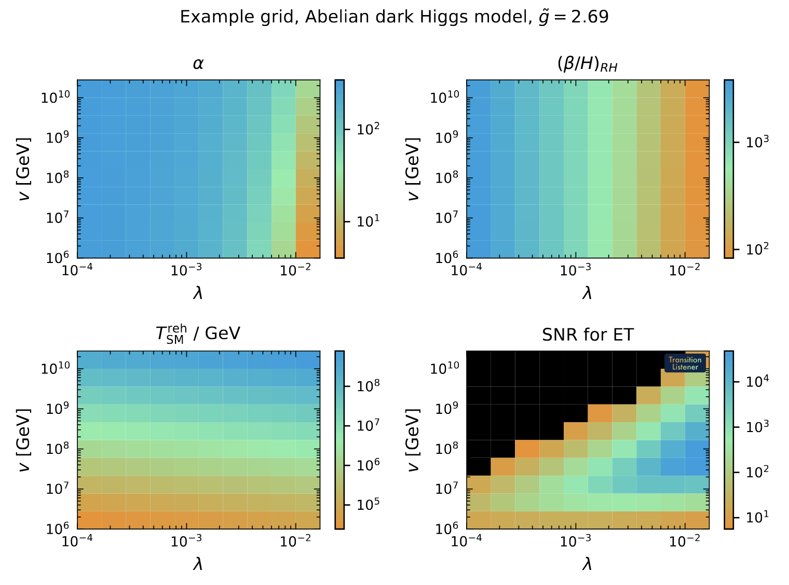
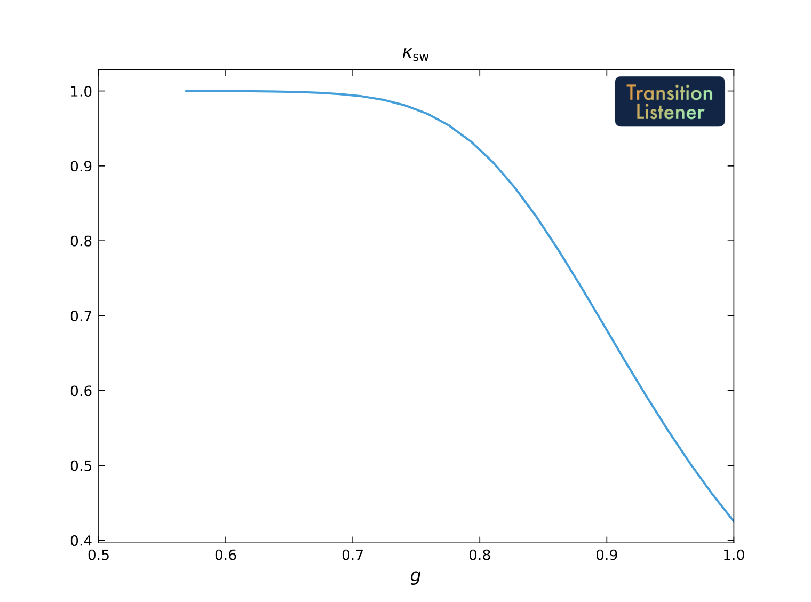

Usage¶
After pip-installing TransitionListener, you can easily start using it
from your terminal. It is really simple to get started.
Configuration files¶
All it takes is a human-readable configuration file, a .yaml file, which
specifies the model parameters, scanning ranges, and desired outputs.
You can find example configuration files in the config/ directory of the TransitionListener repository.
Single point evaluation¶
Let’s say you have created a configuration file named example_point.yaml in the example/ directory, which specifies a benchmark point which you would like to know of whether it features a first-order phase transition and what gravitational wave signal it produces.
You can run TransitionListener using the command line interface as follows:
$ tl -c examples/example_point.yaml -v
This command will execute TransitionListener with the specified configuration
file and enable verbose output. This will
print detailed information about the progress of the computation to the terminal.
When the computation is finished, the results
will be saved to the scans directory to a subfolder as specified in the configuration
file. In there you will find
various output files, including 0_Input_params.txt reminding you of the chosen input parameters,
1_All_params.txt showing all computed parameters during the performed run, as well as
2_Observability.txt containing the computed observability metrics. Further, additional
plots and log files including information about the computation process are saved there.
Grid and line scans¶
If you want to run a small grid scan using the command line interface, you can use the following command:
$ tl -c examples/example_grid.yaml -j 10
The -j flag specifies the number of parallel jobs to run. Here we took 10 jobs. This can speed up the scan significantly on multi-core machines. The above scan takes a only a couple of minutes on a modern machine. After the scan is complete, the results will be saved in the specified output directory. You will find various output files, including also the following overview plot.
{kind=link}

On top of that, you will find close to 200 intermediate results saved in the output directory,
in the form of .txt files as well as .pdf plots.
Alternatively, you can also run an example line scan using the following command:
$ tl -c examples/example_line.yaml -j 5
This will perform a line scan over the specified parameter range with 5 parallel jobs. The results will be saved in the output directory as specified in the configuration file. The output is very similar to the grid scan case. For instance, you will find the efficiency factor for converting released vacuum energy to bulk fluid motion among them:
{kind=link}

Percolation algorithm controls¶
TransitionListener exposes two percolation solvers through the configuration:
adaptive_step_sizeis the default. It does not require a nucleation- temperature seed and instead builds an adaptive support bank for \(P(T)\) on the fly: the controller scouts the bubble-nucleation-rate peak, protects the high-temperature onset where the bubble nucleation rate is still very small, and then refines the temperature interval in which the true-vacuum fraction increased from zero to one. It further rejects points with unresolved bounce action jitter. The percolation integral is solved via an ODE solver (percolation_integral_method = "ode") using the time-temperature relation in the false vacuum dervied from the speed of sound in that phase.fixed_step_sizeis the an alternative solver of the percolation integral, which sometimes gives more robust results when the adaptive step size solver fails due to numerical instabilities. It evaluates the percolation integral on a precomputedTSYMgrid of sizepercolationConf.n_action(default30;n_action = 100gives the high-resolution benchmark setup). As it requries a nucleation temperature as as seed, which first needs to be computed, it is a bit slower on average and cannot deal with cases in which the \(\Gamma = H^4\) condition can never be satisfied, i.e. for extremely slow phase transitions. For most cases, this mode is however a good alternative, in case any unexpected behavior occurs during the percolation computation.
The most important controls are:
percolation_algorithm_mode:adaptive_step_sizeorfixed_step_size.percolation_integral_method:ode(default) ordouble_integralfor diagnostics.percolation_time_temperature_mode:sound_speed(default) uses the symmetric-phase \(c_s^2(T)\) and the cosmological scale-factor ratio \(a(T)/a(T_\mathrm{hot})\) inside the percolation integrand.bagfalls back to the \(c_s^2 = 1/3\) limit (no scale-factor weighting).percolationConf.n_action: fixedTSYMsupport count forfixed_step_sizeruns.percolation_n_action_min,percolation_n_action_increment,percolation_n_action_max,percolation_max_action_temperatures,percolation_maxit: support-bank controls foradaptive_step_size.percolation_jitter_GH4_threshold: the bounce-rate jitter detector (in \(\log_{10}(\Gamma/H^4)\)) – default1.0; raise to2.0or so on models with very steep, deeply supercooled action profiles.percolation_acc_tperc,percolation_acc_tfinal,percolation_acc_rh: refinement and stopping controls foradaptive_step_size.
All of these can be set globally in the YAML configuration or directly in a
model file via setConfigParameters() when model-specific defaults are
desired. The default configuration uses adaptive_step_size with the
ode / sound_speed integral, so most users do not need to touch any
of these knobs.
Precision modes¶
The tracing and tunnelling precision presets are configurable through
precision_mode:
default– vanilla settings.robust– tighter phase tracing only.xtrace– still tighter tracing (very smalldtstart,dtmin).tunneltight– default tracing plus tighter bounce path-deformation tolerances.benchmark– tightens both tracing and tunnelling. Note: While being the most precise mode, it can be computationally expensive, with runtimes of a single computation of over one hour, in the case of multi-dimensional scalar potentials.
Random and nested sampling scans¶
You can also run a random scan by using the following command:
$ tl -c examples/example_random_conformal.yaml -j 10
This will perform a random scan over the specified parameter ranges with 10
parallel jobs. The results will be saved in the output directory in a .csv file.
You can use this file
to analyze the results further or visualize them using your preferred plotting tools.
If you are interested in performing a nested sampling scan using mpi for
parallelization you can use the following command:
$ mpiexec -n 16 tl -c config/example-nested-scan.yaml
This will run a nested sampling scan with 16 parallel processes.
The results will again be saved in a .csv file in the specified output directory.
For detailed installation instructions and usage examples please refer to the following sections:
Installation: Installation Guide
Usage: Usage
For more information, visit the documentation at https://tasillo.de/TransitionListener_development or check out the code repository at https://github.com/tasicarl/TransitionListener.